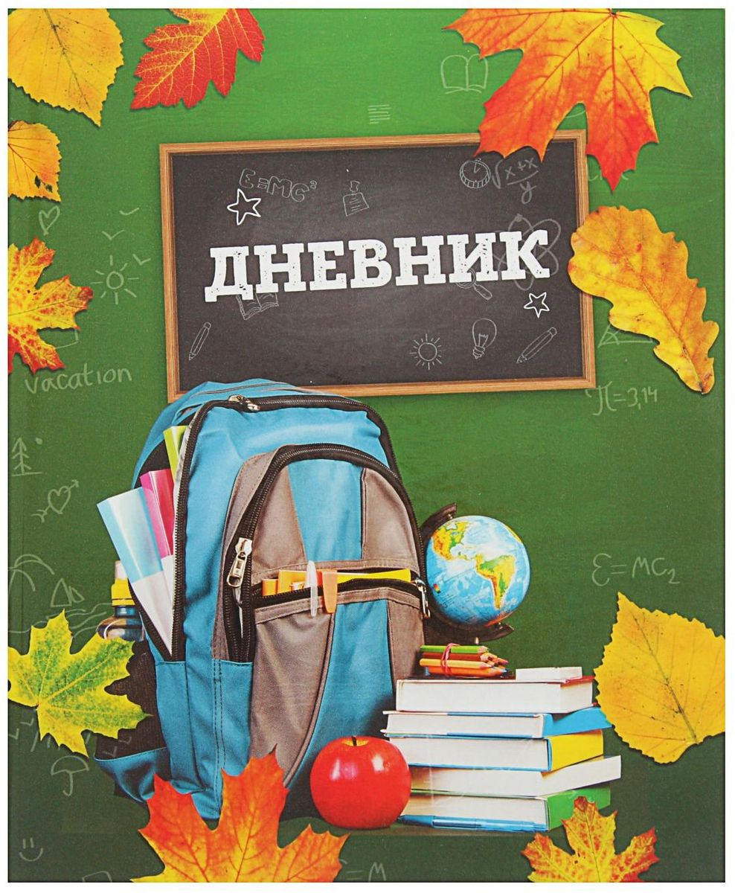

- Дневник является обязательным школьным документом школьника. В некоторых образцах дневников на первой странице размещены общие требования к учащимся школ Российской Федерации, а также правила поведения учащихся.
- В начале каждого учебного года школьник заполняет лицевую сторону обложки, на последующих страницах в соответствующих графах записываются названия предметов, фамилии, имена и отчества учителей, расписание уроков, факультативных занятий, внеклассных мероприятий. В дневнике целесообразно записать сведения о родителях школьника, его домашний адрес и телефон.
- Школьник ежедневно записывает домашние задания в графы того дня, на который они заданы. Накануне каникул в дневник записывается план внеклассных и внешкольных мероприятий на этот период.
- Школьник обязан предъявлять дневник по требованию учителей-предметников и классного руководителя.
- Учителя, выставляя оценку за ответ школьника, вписывают ее в классный журнал и в дневник одновременно, после чего заверяют записи в дневнике своей подписью.
- Классный руководитель постоянно следит за правильностью и аккуратностью ведения дневников. В конце каждой недели он просматривает дневники учащихся, проверяет наличие в нем всех оценок, полученных учащимся в течение недели. В дневнике может быть отмечено количество пропущенных уроков и опозданий за истекшую неделю. Классные руководители могут еженедельно выставлять оценки за прилежание, внешний вид ученика, дежурство, культуру поведения и общения, а также за ведение дневника. Кроме того, для заметок учителей и классного руководителя выделена специальная страница в конце дневника. Здесь чаще всего записывается информация для родителей, касающаяся учебной деятельности и внеклассных мероприятий. Итоговые сведения об успеваемости, поведении и прилежании учащихся могут быть выставлены учителем в конце дневника либо в прилагаемой к нему ведомости.
- Родители должны систематически просматривать дневник: полученные оценки, записи о предстоящих внеклассных и внешкольных мероприятиях, особое внимание обращать на замечания и рекомендации учителей и классного руководителя. Родители подписывают дневник еженедельно.
- Точное и аккуратное ведение дневника может быть достигнуто только при тщательном, пунктуальном и систематическом выполнении перечисленных рекомендаций как школьниками и родителями, так и учителям и классным руководителем.
Памятка по ведению дневника как основного школьного документа ваших детей.